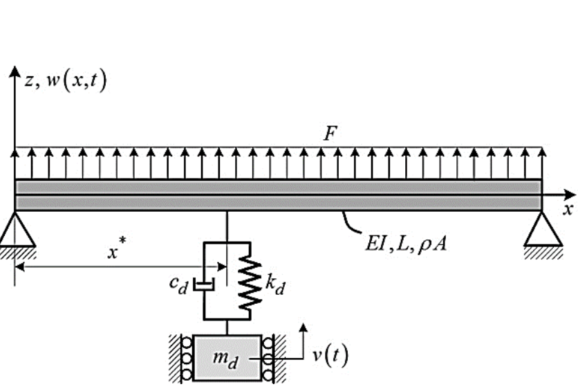

Identification of nonlinear modal interactions in a beam-mass-spring-damper system based on mono-frequency vibration response
Journal of Computational Methods in Engineering (in Persian, National Journal), 38(1), pp.19-36, 2019. Journal Article

Abstract
In this paper, nonlinear modal interactions caused by one-to-three internal resonance in a beam-mass-spring-damper system are investigated based on nonlinear system identification. For this purpose, the equations governing the transverse vibrations of the beam and mass are analyzed via the multiple scale method and the vibration response of the system under primary resonance is extracted. Then, the frequency behavior of the vibration response is studied by Fourier and Morlet wavelet transforms. In order to perform the nonparametric identification of the time response, mono-frequency intrinsic mode functions are derived by the advanced empirical mode decomposition. In this approach, masking signals are utilized in order to avoid mode mixing caused by modal interaction. After analyzing the frequency behavior of each mode function, slow flow dynamics of the system is established and intrinsic modal oscillators for reconstructing the corresponding intrinsic mode are extracted. Finally, by analyzing the beating phenomenon in a simple one-degree-of-freedom system, it is shown that the internal resonance causes beating only under the circumstance that the slope of the logarithmic amplitude of oscillator force is nonzero. The results, therefore, show that depending on the periodic, pseudo-periodic and chaotic behavior of the response, modal interactions might be stationary or non-stationary. Moreover, the chaotic behavior occurs mostly in the vibration mode excited by the internal resonance mechanism.